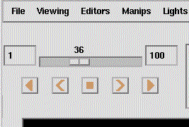

|  |
An example for timesteps is an animated
particle trace (map contains module
Tracer
with parameter taskType = Moving points),
With the Timestep Sequencer you can follow
up your animated particle trace forward and backward either
Notes:
| Don't mix up the Timestep Sequencer in the Renderer window with the player/sequencer for a parameter in the Control Panel! |
| In case of timesteps you can select File > Snap all in the Renderer menu to get a series of snapshots of the viewer area. |